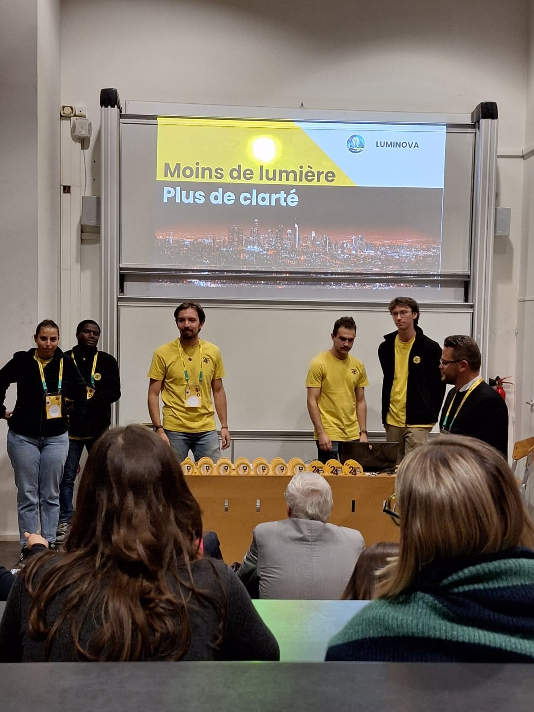
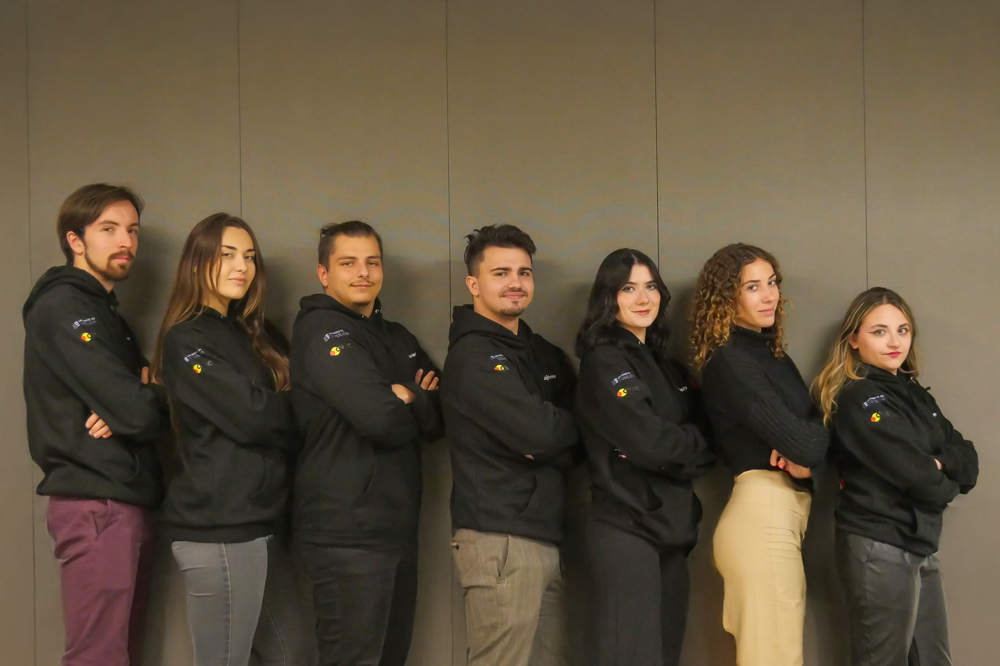
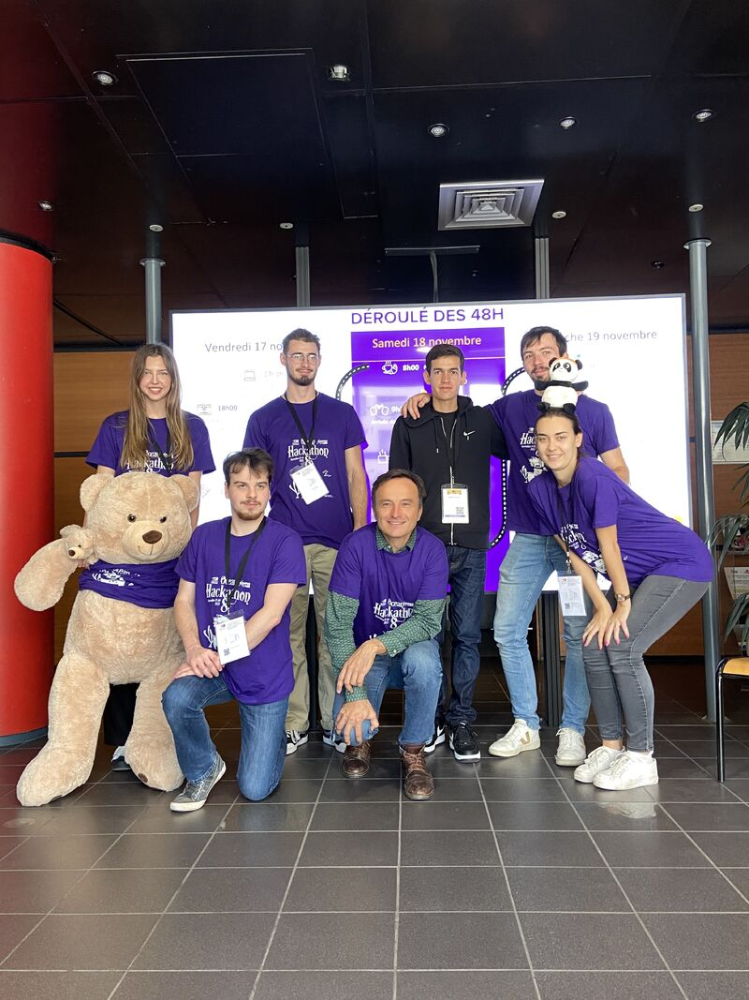
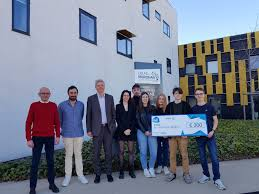

Localisation
Marseille, France — ouvert à Lyon
Bonjour ! Je suis l'assistant virtuel de Joris. Comment puis-je vous aider aujourd'hui ?

Qui suis-je ?
🎯 Consultant BI & IA chez Talan, je suis à la fois Data Analyst et Data Engineer : je conçois la chaîne de bout en bout, de la collecte et modélisation de la donnée jusqu’à la restitution décisionnelle et la mise en production de solutions IA. Formé à la Sorbonne Paris 1 et à Toulon (Master Data Analytics), j’allie vision métier et exécution technique.
🚀 Au fil d’expériences chez Talan, Micropole, ArianeGroup, le Crédit Agricole et Météo-France, j’ai piloté des projets data complets : ETL, modélisation, Cloud, tableaux de bord et IA, dans des environnements exigeants et parfois internationaux.
🔬 J’ai aussi une vraie passion pour la recherche et la statistique (séries temporelles, modélisation). Mon objectif : créer de la valeur, simplifier la complexité et faire de la donnée un vrai levier de performance. Basé à Marseille, je suis également ouvert à Lyon.
Derniers Articles
Chargement des articles...
Parcours Professionnel
Aix-en-Provence, France
Bordeaux, France
Saint-Denis, Réunion
Rennes, France
Les Sables-d'Olonne, France
Parcours Académique
2024 - 2025
DU Data Analytics
Paris, France
2023 - 2025
Master Data Analytics
Toulon, France
La course à pied et les voyages !
Course à pied
Marathon, Trail, et peut-être un triathlon, qui sait ?😅

Associatif
L'AFEV, Fédération étudiante, évènements sociaux & solidaires

Hackathons
Solution pour accéler les opérations de sauvetage en mer pour la Marine Nationale avec NavalGroup

Création de start-up
Chef de projet - Lauréat Vannetais du prix Pépite 🏆
Envoyez-moi un message
Marseille, France — ouvert à Lyon
+33 766840946
Joris.salmon53290@gmail.com